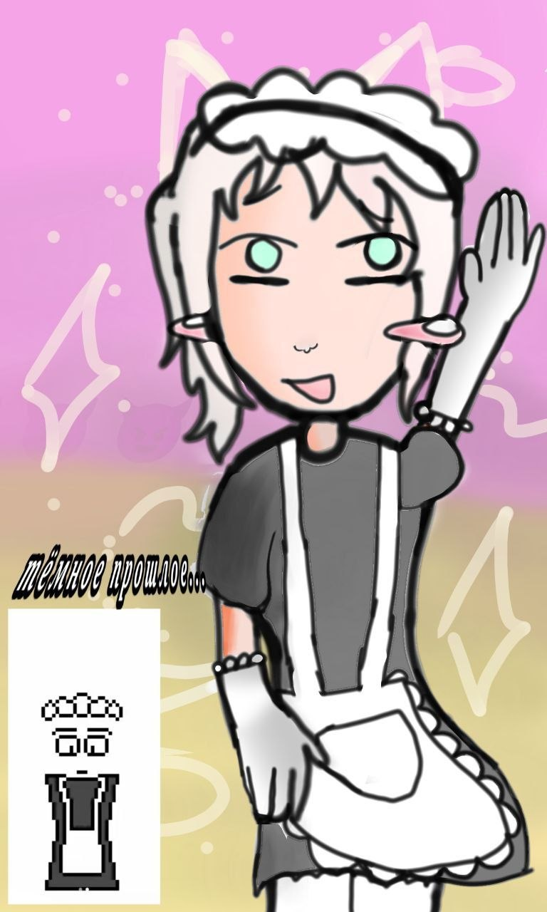
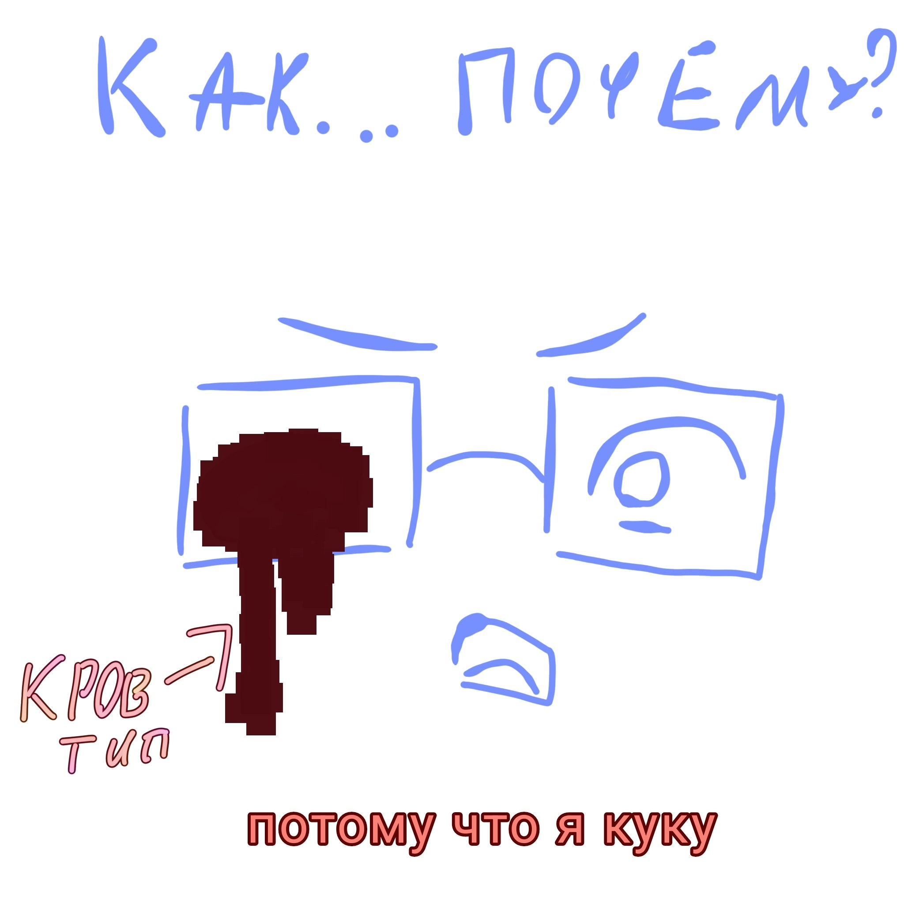
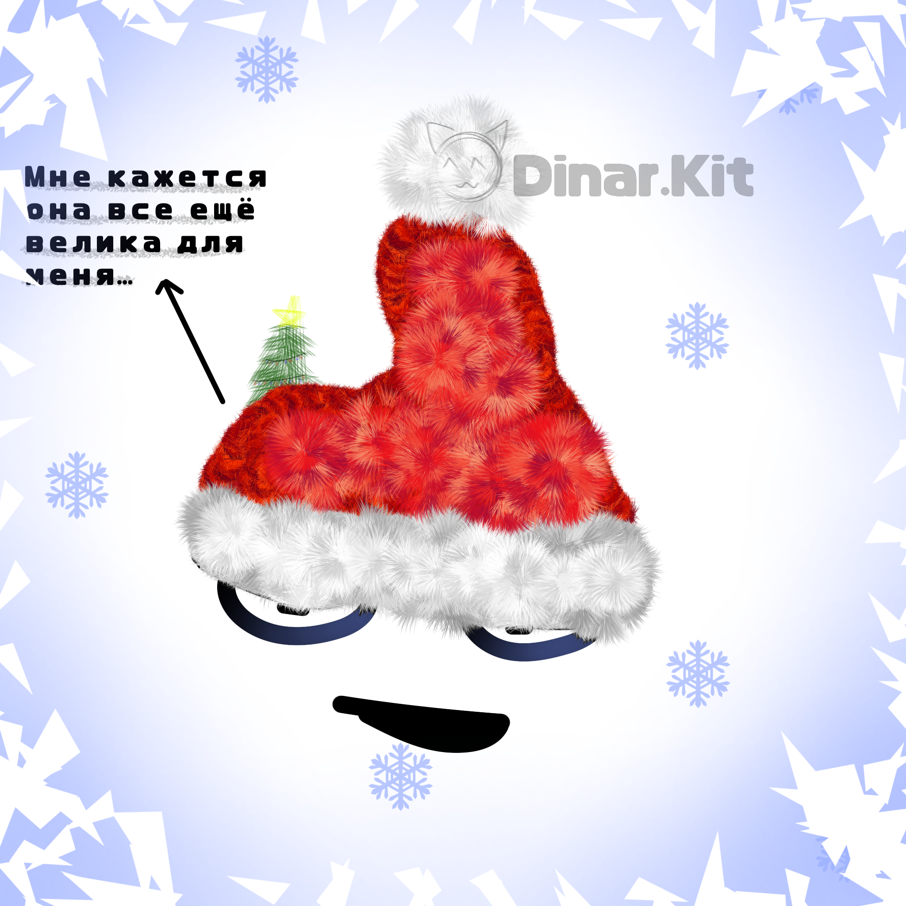
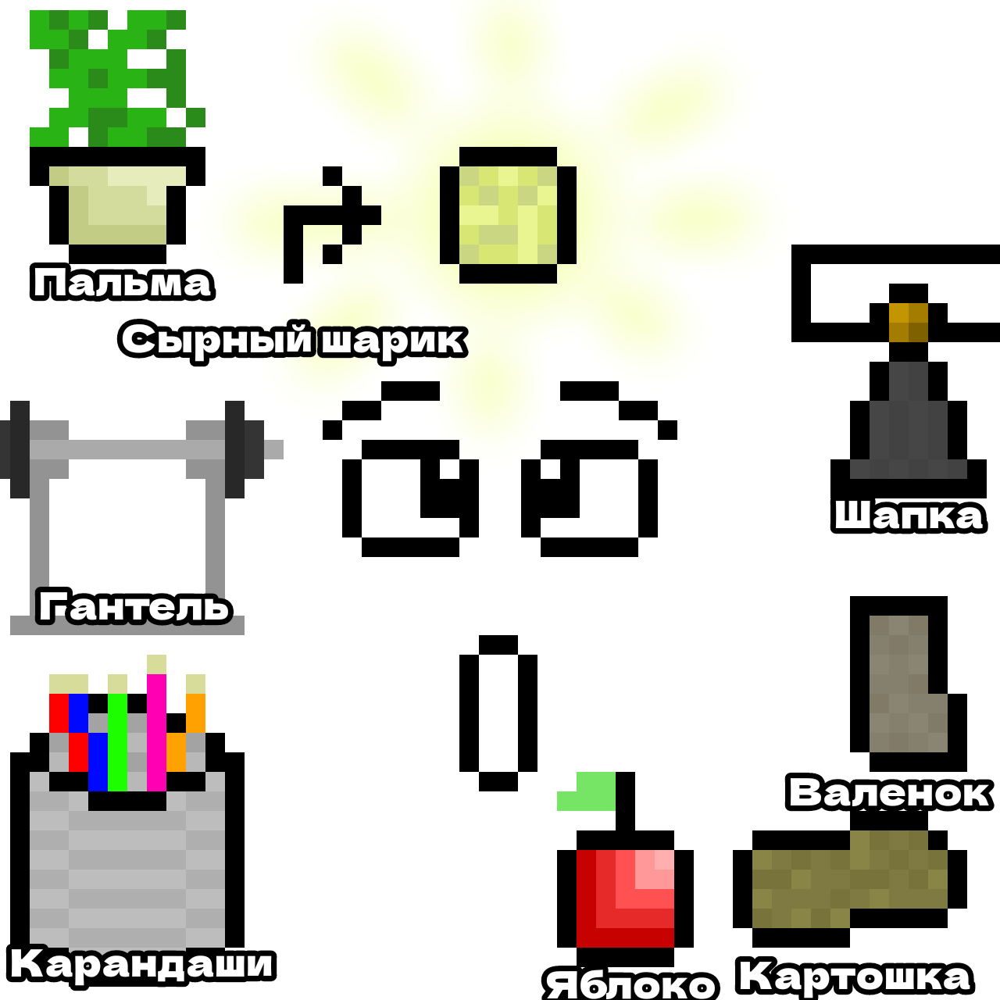

1-24 серии ничего особого не происходит. Элфи отвечает на вопросы и разговаривает на разные темы создавая предметы.
в 25-29 сериях происходят важнейшие для мультфильма ситуации. После потери сознания элфи встречает кряка. По его словам создателя этого места
в 30 и 32 серии элфи понимает что так он долго не продержится и потихоньку принимает свою судьбу человека с терминальной стадии рака. в процессе он почти теряет способность говорить В итоге элфи просит кряка закончить эти мучения и сезон заканчивается вместе с элфи
Элфи.
главный протагонист всех серий и по совместительству главный любитель сырных шариков
Кряк.
антагонист в сериях 25-32.
Доктор
про него почти ничего не известно. Погрузил Элфи в симуляцию.
в Фандоме проекта стимуляции было создано достаточно много мемов:
сырные шарики (Элфи очень любит их и часто упоминает за что они и стали мемом)
Проект Меллстройности (фан-проект где Элфи кряк и доктор заменены фразами меллстроя при этом сохраняя смысл)
постоянные коментарии про (Еву) Элфи.
за весь 1 сезон было добавлено всего 5 спешлов где Элфи успел:
испугаться на хеллоуин
встретил новый год
был зарикролен
побыл дураком в день дурака
создал свое королевство
в первых сериях проекта были субтитры которые позже бесследно пропали по неизвестной причине.
разбор полётов. Рубрика созданная для поддержания канала от которой позже отказались по неизвестной причине
за всю историю проекта была создана 1 фанатская игра позже так и не вышедшая в сеть. Говорить особо нечего.
Галерея:




вооссоздана лишь часть всех рисунков поскольку автор сайта ленивая жопа.